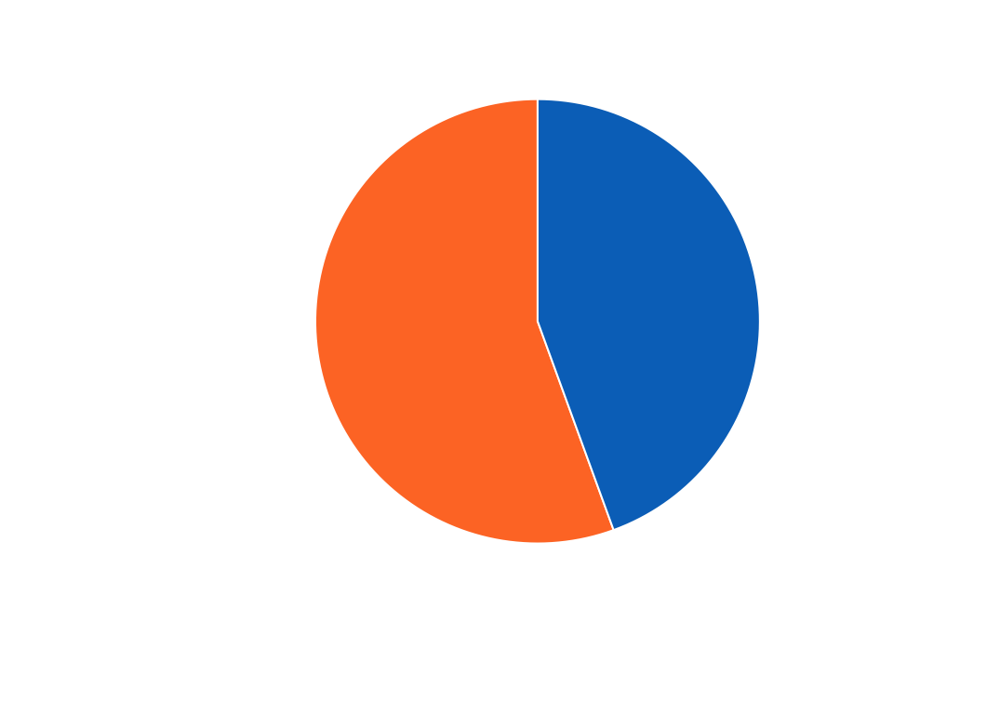
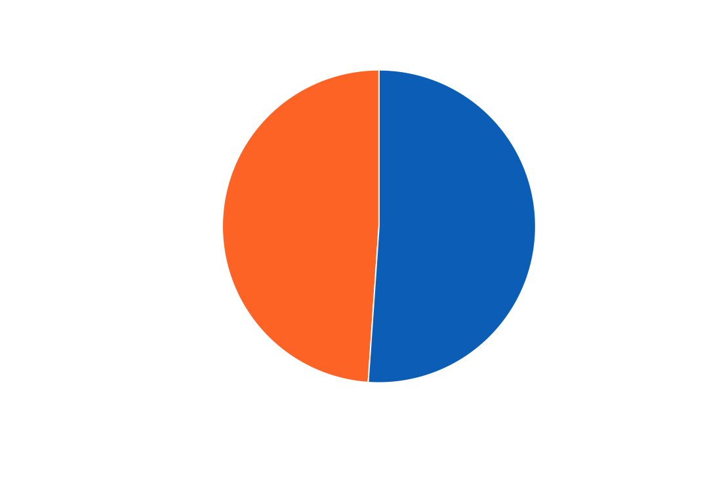
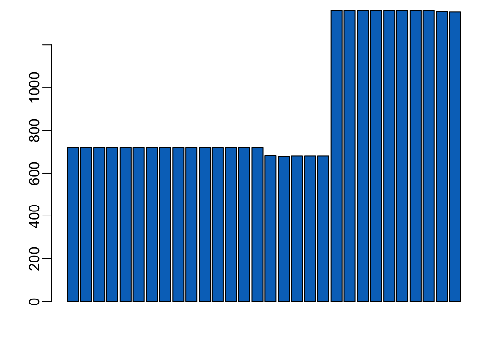

OneDrive <- "~/Library/CloudStorage/OneDrive-OxfordUniversityClinicalResearchUnit"Vietnam serum bank
1 Contants
The OneDrive root:
Path to raw data:
path2data <- paste0(OneDrive, "/SPECIAL/MODELLING/Hoang Nhung/20FL/20FL_samples/",
"20FL_samples_v2/standardized_20FL_metadata/")bissexts <- seq(1952, 2030, 4)
not31 <- c(2, 4, 6, 9, 11)
hash <- rep(31, 12)
hash[not31] <- 30
hash [1] 31 30 31 30 31 30 31 31 30 31 30 312 Packages
Required packages:
required <- c("readxl", "stringr", "purrr", "dplyr", "lubridate", "stringi")Installing those that are not installed yet:
to_install <- required[! required %in% installed.packages()[,"Package"]]
if (length(to_install)) install.packages(to_install)Loading the packages for interactive use:
invisible(sapply(required, library, character.only = TRUE))3 Functions
A tuning of the grep() function:
grep2 <- function(...) grep(..., ignore.case = TRUE, value = TRUE)A function that insert a character string at a given position inside another character string:
insert <- function(x, at, what) {
str_sub(x, at, at - 1) <- what
x
}4 Reading the data
Takes 3.5”:
dataset <- path2data |>
list.files(".xlsx$", full.names = TRUE, recursive = TRUE) |>
grep("~", x = _, value = TRUE, invert = TRUE) |>
map(read_excel) |>
bind_rows() |>
select(-c(Note, Sample_type, patient_ID, Initial_name, starts_with("Address"),
Exact_age_calculated, Check_age_in_correct_group, Age_ontube)) |>
filter_out(is.na(Sample_ID)) |>
mutate(across(Collection_year, ~ replace_values(.x, "202" ~ "2022", "21" ~ "2021")),
across(Birth_year, ~ replace_values(.x, "86" ~ "1986")),
across(ends_with(c("day", "month", "year")), as.integer),
across(ends_with("month"), ~ if_else(.x < 1 | 12 < .x, NA_integer_, .x)),
across(ends_with("day"), ~ if_else(.x > 31, NA_integer_, .x)),
across(Birth_day, ~ if_else(.x > 30 & Birth_month %in% not31,
NA_integer_, .x)),
across(Collection_day, ~ if_else(.x > 30 & Collection_month %in% not31,
NA_integer_, .x)),
across(Birth_day, ~ if_else(.x > 28 & Birth_month == 2 &
! Birth_year %in% bissexts,
NA_integer_, .)),
across(Collection_day, ~ if_else(.x > 28 & Collection_month == 2 &
! Collection_year %in% bissexts,
NA_integer_, .)),
across(Gender, ~ .x |>
stri_trans_general("any-ascii") |>
tolower() |>
replace_values(c("f", "nu", "nuu", "nux", "nnu") ~ "female",
c("m", "nam", ",m") ~ "male")),
across(Hospital_name, ~ stri_trans_general(.x, "any-ascii")),
across(Province, ~ .x |>
stri_trans_general("any-ascii") |>
replace_values("Can Tho_former Soc Trang" ~ "Can Tho",
"Daklak" ~ "Dak Lak",
"Dong Nai_former Binh Phuoc" ~ "Dong Nai",
"DT" ~ "Dong Thap",
"Gia Lai_fomer Binh Dinh" ~ "Gia Lai",
"Gia Lai_former Binh Dinh" ~ "Gia Lai",
"HCM" ~ "HCMC",
"HUE" ~ "Hue",
"QN" ~ "Quang Ngai",
"Nu" ~ "Quang Ngai")),
across(Participant_no, ~ sprintf("%04s", .x)),
across(Collection_no, ~ sprintf("%02s", .x)),
across(Sample_ID, ~ str_remove_all(.x, " ")),
across(Sample_ID, ~ ifelse(nchar(.x) < 15, insert(.x, 13, "0"), .x)),
across(Age_group, ~ .x |>
str_remove_all(" ") |>
str_replace("≤&<", ",")),
across(Age_group, ~ paste0("[", .x, ")")),
across(Dept., ~ .x |>
stri_trans_general("any-ascii") |>
tolower()),
across(Dept., ~ case_when(
str_starts(.x, "kha|p|khoa kham benh") ~ "0",
str_starts(.x, "nh|nn|no|ns|nt|th|ti|tt|khoa nh|khoa no|mat|tk|tm") ~ "2",
str_starts(.x, "ng| khoa ngoai nhi|khoa ngoai nhi") ~ "3",
str_starts(.x, "chan|ccth|ctch|khoa chan thuong") ~ "4",
str_starts(.x, "hs|hctc-cdn|khoa icu") ~ "5",
str_starts(.x, paste0("cap|d|g|l|r|s|ta|tr|u|y| khoa cap cuu nhi| khoa noi",
" nhi|hhls|khoa cap cuu nhi|khoa don nguyen dich vu ",
"nhi|khoa lien chuyen khoa|khoa sanh|khoa so sinh|kl",
"ck|cc")) ~ "6",
.default = .x)),
across(Dept., as.numeric))Hospital departments:
departments <- c("Out-patient, not admitted to any ward",
"Respiratory/chest ward",
"Gastroenterology ward",
"General surgical ward",
"Trauma/Orthopedics",
"Intensive care unit",
"Other ward (not listed above)",
"Unknown", NA, NA, "Unknown")We are dealing with 14 hospitals in 10 provinces.
Note: An Giang and Soc Trang both have a children hospital. HCMC has 2 children hospitals.
Note: in 2025,
Soc TrangbecameCan ThoBinh PhuocbecameDong NaiBinh DinhbecameGia LaiBVDK Binh DinhbecameBVDK Trung tam tinh Gia Lai
map_int(dataset, ~ sum(is.na(.x))) Participant_no Province Hospital_name Site_code
0 0 0 0
Collection_no Sample_ID Age_group Birth_day
0 0 0 6000
Birth_month Birth_year Gender Collection_day
5990 832 828 828
Collection_month Collection_year Dept.
703 703 937 5 Looking at the data
dataset |>
filter(is.na(Collection_year)) |>
map_int(~ sum(is.na(.x))) Participant_no Province Hospital_name Site_code
0 0 0 0
Collection_no Sample_ID Age_group Birth_day
0 0 0 703
Birth_month Birth_year Gender Collection_day
703 703 703 703
Collection_month Collection_year Dept.
703 703 703 round_runif <- function(to) round(runif(1, 1, to))
rgb2 <- function(...) rgb(..., maxColorValue = 255)
pie2 <- function(...) pie(..., border = "white")
blue <- rgb2(0, 115, 195)
orange <- rgb2(255, 121, 46)dataset |>
filter_out(is.na(Collection_year)) |>
mutate(across(Collection_day,
~ ifelse(is.na(.x),
ifelse(Collection_month == 2,
ifelse(Collection_year %in% bissexts,
round_runif(29), round_runif(28)),
round_runif(hash[Collection_month])), .x)),
collection_date = ymd(paste(Collection_year, Collection_month,
Collection_day))) |>
group_by(collection_date) |>
tally() |>
mutate(n = cumsum(n)) %>%
bind_rows(tibble(collection_date = ymd(20210101), n = NA), .) |>
with(plot(collection_date, n, type = "l", lwd = 3, axes = FALSE,
col = orange, xlab = NA, ylab = "number of samples"))
yrs <- 2021:2026
axis(1, ymd(paste0(yrs, "0101")), yrs)
axis(2)
dataset |>
filter(Dept. < 7, ! is.na(Dept.)) |>
group_by(Dept. < 1) |>
tally() |>
pull(n) |>
pie2(NA, init.angle = 90, col = c(orange, blue))
dataset |>
filter_out(is.na(Gender)) |>
group_by(Gender) |>
tally() |>
pull(n) |>
pie2(NA, clockwise = TRUE, col = c(blue, orange))tmp <- dataset |>
mutate(across(Age_group, ~ .x |>
str_remove("\\[") |>
str_remove(",.*$") |> as.integer()))
tmp |>
group_by(Age_group < 20) |>
tally() |>
pull(n) |>
pie2(NA, init.angle = 90, col = c(orange, blue))
tmp |>
group_by(Age_group) |>
tally() |>
pull(n) |>
barplot(col = blue)